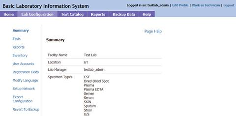
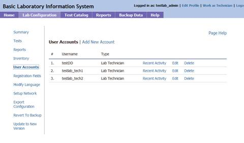
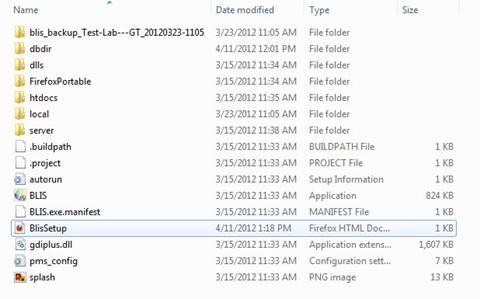
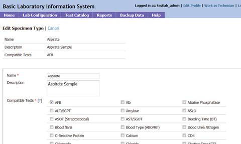
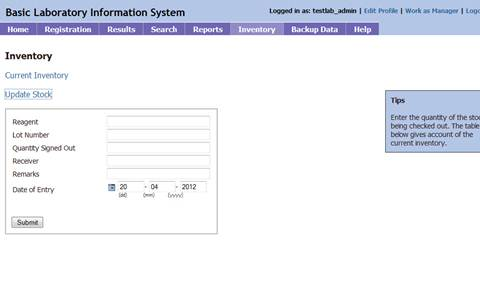
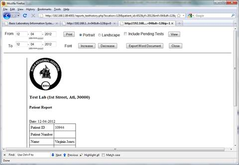
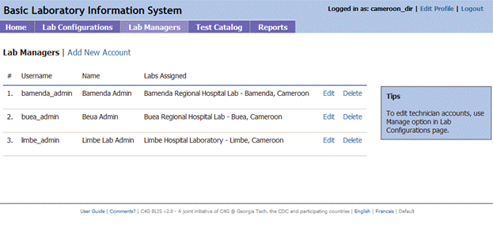

Basic Laboratory Information System
User Guide
Print Topic
<div class="WordSection1"> <h2>What is BLIS?<a name="NODO272" id="NODO272"></a></h2> <p class="MsoNormal">The Basic Laboratory Information System, BLIS, is a freeware Web-based system that can be installed in a local, district, or national laboratory. It is a tool that can help to standardize data, which improves the ability to run useful reports and can both give a realistic picture of laboratory services and assist with staff and budget planning. With enough data, BLIS can be used to track disease prevalence over time.</p> <p class="MsoNormal">Features of BLIS include:</p> <p style="TEXT-INDENT: -0.25in" class="MsoListParagraphCxSpFirst"> <span style="FONT-FAMILY: Symbol">·<span style= "FONT: 7pt 'Times New Roman'"> </span></span> One-time entry of each unique patient</p> <p style="TEXT-INDENT: -0.25in" class="MsoListParagraphCxSpMiddle"> <span style="FONT-FAMILY: Symbol">·<span style= "FONT: 7pt 'Times New Roman'"> </span></span> Standardization of data collected (allowable entries for specimen type, test type, patient data, reagents are set at MOH level and then entered consistently throughout a country)</p> <p style="TEXT-INDENT: -0.25in" class="MsoListParagraphCxSpMiddle"> <span style="FONT-FAMILY: Symbol">·<span style= "FONT: 7pt 'Times New Roman'"> </span></span> Customization to a country’s needs</p> <p style="TEXT-INDENT: -0.25in" class="MsoListParagraphCxSpMiddle"> <span style="FONT-FAMILY: Symbol">·<span style= "FONT: 7pt 'Times New Roman'"> </span></span> Ability to track lab supplies such as test kits, reagents</p> <p style="TEXT-INDENT: -0.25in" class="MsoListParagraphCxSpMiddle"> <span style="FONT-FAMILY: Symbol">·<span style= "FONT: 7pt 'Times New Roman'"> </span></span> Ability to run reports as specified by a country</p> <p style="TEXT-INDENT: -0.25in" class="MsoListParagraphCxSpMiddle"> <span style="FONT-FAMILY: Symbol">·<span style= "FONT: 7pt 'Times New Roman'"> </span></span> Automatic alerting of data values that may be out of range(reference ranges and panic values are set at the regional or national level)</p> <p style="TEXT-INDENT: -0.25in" class="MsoListParagraphCxSpMiddle"> <span style="FONT-FAMILY: Symbol">·<span style= "FONT: 7pt 'Times New Roman'"> </span></span> Daily logs to be reviewed for data verification</p> <p style="TEXT-INDENT: -0.25in" class="MsoListParagraphCxSpLast"> <span style="FONT-FAMILY: Symbol">·<span style= "FONT: 7pt 'Times New Roman'"> </span></span> Simple data backup</p> <p style="LINE-HEIGHT: normal; MARGIN-BOTTOM: 0pt" class= "MsoNormal">As with any properly implemented electronic record system, BLIS may be found over time to improve data accuracy and reduce costs in laboratories. Benefits already seen in labs using BLIS:</p> <p style= "LINE-HEIGHT: normal; TEXT-INDENT: -0.25in; MARGIN-BOTTOM: 0pt" class="MsoListParagraphCxSpFirst"><span style= "FONT-FAMILY: Symbol">·<span style= "FONT: 7pt 'Times New Roman'"> </span></span> Reduced burden for technicians, as results are available soon after testing</p> <p style="TEXT-INDENT: -0.25in" class="MsoListParagraphCxSpMiddle"> <span style="FONT-FAMILY: Symbol">·<span style= "FONT: 7pt 'Times New Roman'"> </span></span> Improved consistency of data entry</p> <p style= "LINE-HEIGHT: normal; TEXT-INDENT: -0.25in; MARGIN-BOTTOM: 0pt" class="MsoListParagraphCxSpMiddle"><span style= "FONT-FAMILY: Symbol">·<span style= "FONT: 7pt 'Times New Roman'"> </span></span> Ability to view patient history and track samples</p> <p style= "LINE-HEIGHT: normal; TEXT-INDENT: -0.25in; MARGIN-BOTTOM: 0pt" class="MsoListParagraphCxSpMiddle"><span style= "FONT-FAMILY: Symbol">·<span style= "FONT: 7pt 'Times New Roman'"> </span></span> Ability to aggregate data and analyze data patterns and trends at a regional or national level</p> <p style= "LINE-HEIGHT: normal; TEXT-INDENT: -0.25in; MARGIN-BOTTOM: 0pt" class="MsoListParagraphCxSpMiddle"><span style= "FONT-FAMILY: Symbol">·<span style= "FONT: 7pt 'Times New Roman'"> </span></span> Printed patient records instead of handwritten records</p> <p style= "LINE-HEIGHT: normal; TEXT-INDENT: -0.25in; MARGIN-BOTTOM: 0pt" class="MsoListParagraphCxSpLast"><span style= "FONT-FAMILY: Symbol">·<span style= "FONT: 7pt 'Times New Roman'"> </span></span> Printed daily logs that make the reports looks like the paper forms used in the laboratory</p> <b><span style= "LINE-HEIGHT: 115%; FONT-FAMILY: 'Calibri','sans-serif'; FONT-SIZE: 11pt"><br style="PAGE-BREAK-BEFORE: always" clear="all"></span></b> <p class="MsoNormal"> </p> <h1>Overview of Manager (Admin) Interface and Features <a name="NODO273" id= "NODO273"></a></h1> <p class="MsoNormal">When you log in as an administrator, you see the Manager home page.</p> <p class="MsoNormal"><img id="Picture 4" alt= "Description: Admin home.jpg" src= "BLISUserGuideUpdate_files/image001.jpg" width="480" height="330" name="Picture 4"></p> <p class="MsoNormal">To switch to User view, click the <b>Work as Technician</b> link at the top right of the page.</p> <p class="MsoNormal"> </p> <h2>Lab Configuration<a name="NODO274" id="NODO274"></a></h2> <p class="MsoNormal">This section allows you to choose what data are collected to track the tests, reports, and other information. Lab configuration is generally set at the country level, and may vary by country.</p> <p class="MsoNormal">BLIS can be used as a tool for standardizing data collection. To implement BLIS in another lab, use the same lab configuration settings. Use <b>Export Configuration</b> to create a printable and exportable file.</p> <p class="MsoNormal"><img id="Picture 13" alt= "Description: Admin lab config.jpg" src= "BLISUserGuideUpdate_files/image002.jpg" width="480" height="232" name="Picture 13"></p> <h3>Summary <a name="NODO275" id="NODO275"></a></h3> <p class="MsoNormal">This page displays information about lab, specimen types, and test types. It also lists technicians’ logins and privileges.</p> <p class="MsoNormal"></p> <h3>Tests <a name="NODO276" id="NODO276"></a></h3> <p class="MsoNormal">This page allows you to view and edit the tests that are performed at this facility.</p> <p class="MsoNormal"><img id="Picture 12" alt= "Description: admin-test catalog-testtype.jpg" src= "BLISUserGuideUpdate_files/image004.jpg" width="480" height="281" name="Picture 12"></p> <h4> </h4> <h4>Specimen/Test Types <a name="NODO277" id="NODO277"></a></h4> <p style="MARGIN-BOTTOM: 12pt" class="MsoNormal">Allows you to set the specimen and test types as appropriate for your country. Click <b>Show</b> to reveal and <b>Hide</b> to close the list. Check the box for each specimen type collected or test done at this facility, and click <b>Submit</b> to save.</p> <p style="MARGIN-BOTTOM: 12pt" class="MsoNormal"><img id= "Picture 14" alt="Description: admin-tests-spec.jpg" src= "BLISUserGuideUpdate_files/image005.jpg" width="480" height="281" name="Picture 14"></p> <h4>Target TAT <a name="NODO278" id="NODO278"></a></h4> <p class="MsoNormal">Displays turnaround times for tests. To enter or change turnaround time, click <b>Edit</b>. The number and unit (such as “24 hours”) change to a text field and a dropdown list. Enter the desired number and choose <b>Hours</b> or <b>Days</b>. When finished, click the <b>Submit</b> button to save changes, or <b>Cancel</b> to discard changes. These options are below the list.</p> <p class="MsoNormal"><img id="Picture 17" alt= "Description: admin-config-TAT.jpg" src= "BLISUserGuideUpdate_files/image006.jpg" width="480" height="286" name="Picture 17"></p> <h4> </h4> <h4>Results Interpretation <a name="NODO279" id="NODO279"></a></h4> <p class="MsoNormal">Allows you to specify the interpretation for multiple ranges of values for each test type. To view or edit an existing test’s result, choose the test type from the dropdown list and click the <b>Search</b> button. The current interpretation appears. Edit using the text boxes.</p> <p class="MsoNormal">To add a new range to the list, click the <b>Add Another</b> link and enter data in the text boxes. Click the <b>Submit</b> button to save changes, <b>Cancel</b> to discard them.</p> <h2><a href="javascript:report_setup();"><span style= "COLOR: #4f81bd; TEXT-DECORATION: none">Reports</span></a> <a name= "NODO280" id="NODO280"></a></h2> <h3>Laboratory Trend Report <a name="NODO281" id= "NODO281"></a></h3> <p style="MARGIN-BOTTOM: 0pt" class="MsoNormal">Generates an aggregate report of laboratory test results for a particular period for one or all lab sections. The tests listed in the report are the ones checked to include on the Specimen/Test Types page. Click <b>Edit</b> to make changes to the details reported. When finished, click <b>Submit</b> button to save changes, <b>Preview</b> to view the report, <b>Cancel</b> to discard changes.</p> <h3>Daily Report Settings<a name="NODO282" id="NODO282"></a></h3> <p class="MsoNormal">Allows you to set the layout of the Patient Report, Daily Log of Specimens, and Daily Log of Patients. Use the dropdown to select the report type, and click <b>Search</b>. Edit report settings, and add or change a logo to appear on the report. Check or uncheck boxes to show or hide patient, specimen, and test information. When finished, click the <b>Submit</b> button to save changes, or <b>Cancel</b> to discard changes. These options are below the list.</p> <p class="MsoNormal"><img id="Picture 23" border="0" alt= "Description: admin-config-rept settings.jpg" src= "BLISUserGuideUpdate_files/image007.jpg" width="480" height="281" name="Picture 23"></p> <h3>Worksheet <a name="NODO283" id="NODO283"></a></h3> <p class="MsoNormal">Allows you to create templates for gather patient data in the lab. In lab settings where data are not entered at the point of service, the data entry staff enter patient information and the tests ordered, then print the worksheet so that lab technicians can write test results and other data to be entered into BLIS. Select the <b>Lab Section</b> and <b>Test Type</b> and click <b>Search</b> to edit the report format. To edit a custom report, click <b>Edit</b> to the right of the report. </p> <p class="MsoNormal"><img id="Picture 21" border="0" alt= "Description: admin-config-worksh1.jpg" src= "BLISUserGuideUpdate_files/image008.jpg" width="480" height="281" name="Picture 21"></p> <p class="MsoNormal"><img id="Picture 22" border="0" alt= "Description: admin-config-worksh2.jpg" src= "BLISUserGuideUpdate_files/image009.jpg" width="480" height="281" name= "Picture 22"> </p> <h3>Inventory<a name="NODO284" id="NODO284"></a></h3> <p class="MsoNormal">Add the details of stock items.</p> <p class="MsoNormal"><b>New Stock</b> allows you to enter a shipment: Required fields are Reagent, Lot Number, Expiry Date, Quantity Supplied, Units. To add more than one stock item you can select <b>Add Another</b>.</p> <p class="MsoNormal"> <b>Edit Stock</b> allows you to edit information about a reagent; find the one to edit on the list and then click the <b>Edit</b> link in the far-right column. Click <b>Submit</b> button to save changes, <b>Cancel</b> to discard.</p> <p class="MsoNormal"><img border="0" alt= "Description: admin-inventory-1.jpg" src= "BLISUserGuideUpdate_files/image010.jpg" width="480" height= "281"></p> <p class="MsoNormal"><img id="Picture 26" border="0" alt= "Description: admin-inventory-2.jpg" src= "BLISUserGuideUpdate_files/image011.jpg" width="480" height="276" name="Picture 26"></p> <h3>User Accounts<a name="NODO285" id="NODO285"></a></h3> <p class="MsoNormal">This page shows all the users with access to the system. It allows you to create new user accounts, edit account settings, delete accounts, and monitor account activity.</p> <p class="MsoNormal">Click <b>Add New Account</b> to enter a new user.</p> <p class="MsoNormal"></p> <p class="MsoNormal"><b>Recent Activity</b> opens a new browser page to show the user’s activity by location, specimen entry, and results. To view activity by date, enter or edit the start and end dates of the range you wish to see and click <b>View</b>. When you are finished, click <b>Print</b> or <b>Close This Page</b>.</p> <p class="MsoNormal">Click <b>Edit</b> for a user to edit user account details or to reset password. <b>User Type</b> dictates the access the user has in the system. <b>Reset Password</b> allows you as administrator to enter a new password for this user. Click <b>Submit</b> button to save changes, <b>Cancel</b> to discard.</p> <p class="MsoNormal">To remove a user account, click the <b>Delete</b> link for that user. A confirmation box appears. Click <b>OK</b> to complete the deletion, <b>Cancel</b> to keep that user’s information.</p> <h3>Registration Fields <a name="NODO286" id= "NODO286"></a></h3> <p class="MsoNormal">This page shows the configuration of the patient registration page. It allows you to create mandatory fields and hide the fields that are not used, per your country’s protocols. It also allows for creation of certain custom fields for Patient registration and new Specimen addition which may be needed by certain labs only.</p> <p class="MsoNormal">To customize fields, click <b>Edit</b> to make changes: check the box to display a field, uncheck to hide. Set fields as required. After editing, click <b>Update</b> button below the fields to save changes, <b>Cancel</b> to discard.</p> <p class="MsoNormal">To create new fields, choose the <b>Add New</b> link for which to add, and enter field name and type. Click <b>Submit</b> button to save changes, <b>Cancel</b> to discard.</p> <p class="MsoNormal"><img id="Picture 28" border="0" alt= "Description: admin-config-regfields.jpg" src= "BLISUserGuideUpdate_files/image013.jpg" width="480" height="287" name="Picture 28"></p> <h3>Modify Language<a name="NODO287" id="NODO287"></a></h3> <p class="MsoNormal">BLIS allows you to toggle between languages. You can also choose to change the language for a few pages using this option. The pages are listed as a drop-down menu.</p> <p class="MsoNormal">Select the language and category (type of page or section). Select <b>Search</b> button to view or edit the text. When finished, click <b>Submit</b> button to save changes, <b>Cancel</b> to discard.</p> <p class="MsoNormal"><img id="Picture 29" border="0" alt= "Description: admin-config-lang.jpg" src= "BLISUserGuideUpdate_files/image014.jpg" width="480" height="337" name="Picture 29"></p> <h3>Setup Network<a name="NODO288" id="NODO288"></a></h3> <p class="MsoNormal">Use this procedure to add a computer other than the primary one to the network. You will also do this after a computer restart or network failure.</p> <p style="TEXT-INDENT: -0.25in" class="MsoListParagraphCxSpFirst"> <span style="FONT-FAMILY: Symbol">·<span style= "FONT: 7pt 'Times New Roman'"> </span></span> Login as Admin.</p> <p style="TEXT-INDENT: -0.25in" class="MsoListParagraphCxSpMiddle"> <span style="FONT-FAMILY: Symbol">·<span style= "FONT: 7pt 'Times New Roman'"> </span></span> Click on the <b>Setup Network</b> option in the Lab Configuration tab.</p> <p style="TEXT-INDENT: -0.25in" class="MsoListParagraphCxSpMiddle"> <a><span style="FONT-FAMILY: Symbol">·<span style= "FONT: 7pt 'Times New Roman'"> </span></span> Navigate to the program files for BLIS</a><span class= "MsoCommentReference"><span style= "LINE-HEIGHT: 115%; FONT-SIZE: 8pt"><a id="_anchor_1" language= "JavaScript" class="msocomanchor" onmouseover= "msoCommentShow('_anchor_1','_com_1')" onmouseout= "msoCommentHide('_com_1')" href="1.htm#_msocom_1" name= "_msoanchor_1">[mvd51]</a> </span></span>.</p> <p style="TEXT-INDENT: -0.25in" class="MsoListParagraphCxSpLast"> <span style="FONT-FAMILY: Symbol">·<span style= "FONT: 7pt 'Times New Roman'"> </span></span> Double click on the file <b>BlisSetup.html</b></p> <p class="MsoNormal"><span style= "Z-INDEX: 251658240; POSITION: absolute; MARGIN-TOP: 229px; WIDTH: 18px; HEIGHT: 62px; MARGIN-LEFT: 19px"> <img src="BLISUserGuideUpdate_files/image015.gif" width="18" height="62" alt="image"></span></p> <h3>Export Configuration <a name="NODO289" id="NODO289"></a></h3> <p class="MsoNormal">Use this feature to export all configuration settings to Microsoft Word. Clicking this link opens a new browser tab with a preview showing all preset and custom fields as well as report settings. The preview has three buttons at the top: Print, Export as Word document, and Close.</p> <p class="MsoNormal">Click the <b>Print</b> button to open the print dialog box; <b>Export as Word document</b> to create a file named <b>blisreport_[date of report].doc</b>, which you may open or save, or <b>Close</b> to close this browser <a>tab</a><span class= "MsoCommentReference"><span style= "LINE-HEIGHT: 115%; FONT-SIZE: 8pt"><a id="_anchor_2" language= "JavaScript" class="msocomanchor" onmouseover= "msoCommentShow('_anchor_2','_com_2')" onmouseout= "msoCommentHide('_com_2')" href="1.htm#_msocom_2" name= "_msoanchor_2">[DD2]</a> </span></span>.</p> <p class="MsoNormal"><img id="Picture 30" border="0" alt= "Description: admin-config-exptconfig.jpg" src= "BLISUserGuideUpdate_files/image017.jpg" width="480" height="296" name="Picture 30"></p> <h3>Revert to Backup<a name="NODO290" id="NODO290"></a></h3> <p class="MsoNormal">In case of system failure, this feature allows you to revert to a previously backed-up copy of the data. Clicking the link presents the dates of the previous backups and allows you to choose which data set to <a>load</a><span class= "MsoCommentReference"><span style= "LINE-HEIGHT: 115%; FONT-SIZE: 8pt"><a id="_anchor_3" language= "JavaScript" class="msocomanchor" onmouseover= "msoCommentShow('_anchor_3','_com_3')" onmouseout= "msoCommentHide('_com_3')" href="1.htm#_msocom_3" name= "_msoanchor_3">[DD3]</a> </span></span>.</p> <h3>Update to New Version <a name="NODO291" id="NODO291"></a></h3> <p class="MsoNormal">This link automatically updates your version of BLIS to the current <a>one</a><span class= "MsoCommentReference"><span style= "LINE-HEIGHT: 115%; FONT-SIZE: 8pt"><a id="_anchor_4" language= "JavaScript" class="msocomanchor" onmouseover= "msoCommentShow('_anchor_4','_com_4')" onmouseout= "msoCommentHide('_com_4')" href="1.htm#_msocom_4" name= "_msoanchor_4">[DD4]</a> </span></span>. It requires Internet connectivity.</p> <p class="MsoNormal"><span style="COLOR: red"> </span></p> <h2>Test Catalog<a name="NODO292" id="NODO292"></a></h2> <h3>Specimen Type<a name="NODO293" id="NODO293"></a></h3> <p class="MsoNormal"><a>This is the place to add or edit specimen types used in your laboratory</a><span class= "MsoCommentReference"><span style= "LINE-HEIGHT: 115%; FONT-SIZE: 8pt"><a id="_anchor_5" language= "JavaScript" class="msocomanchor" onmouseover= "msoCommentShow('_anchor_5','_com_5')" onmouseout= "msoCommentHide('_com_5')" href="1.htm#_msocom_5" name= "_msoanchor_5">[mvd55]</a> </span></span>.</p> <p class="MsoNormal">Click <b>Add New</b> to enter a new specimen type. Required fields are <b>Name</b>, which is a text box for entering the name of the specimen, and <b>Compatible Tests</b>, which allows you to check the tests that can be performed using that <a>specimen</a><span class="MsoCommentReference"><span style= "LINE-HEIGHT: 115%; FONT-SIZE: 8pt"><a id="_anchor_6" language= "JavaScript" class="msocomanchor" onmouseover= "msoCommentShow('_anchor_6','_com_6')" onmouseout= "msoCommentHide('_com_6')" href="1.htm#_msocom_6" name= "_msoanchor_6">[DD6]</a> </span></span>. <b>Ctrl-F</b> opens the Find function to search for a test. You may enter a <b>Description</b> of the specimen type, which is optional.</p> <p class="MsoNormal"><b><img id="Picture 32" border="0" alt= "Description: testcat-spec1.jpg" src= "BLISUserGuideUpdate_files/image018.jpg" width="480" height="287" name="Picture 32"></b></p> <p class="MsoNormal">To edit the information about a specimen type, find the one you wish to edit on the list and then click the <b>Edit</b> link in the far-right column.</p> <p class="MsoNormal"></p> <p class="MsoNormal">Click <b>Submit</b> button to save changes, <b>Cancel</b> to discard.</p> <p class="MsoNormal"> </p> <h3>Test Type<a name="NODO294" id="NODO294"></a></h3> <p class="MsoNormal"><a>This is the place to add or edit test types used in your laboratory.</a><span class= "MsoCommentReference"><span style= "LINE-HEIGHT: 115%; FONT-SIZE: 8pt"><a id="_anchor_7" language= "JavaScript" class="msocomanchor" onmouseover= "msoCommentShow('_anchor_7','_com_7')" onmouseout= "msoCommentHide('_com_7')" href="1.htm#_msocom_7" name= "_msoanchor_7">[mvd57]</a> </span></span> It is controlled the same was as Specimen Types.</p> <p class="MsoNormal">Click <b>Add New</b> to enter a new test type. Required fields are <b>Name</b>, which is a text box; <b>Lab Section,</b> a dropdown list that includes an option to add a new section; <b>Measures,</b> which are editable; and <b>Compatible Specimens</b>, which allows you to check one or more specimens that can be used for this test.</p> <p class="MsoNormal">Optional fields include <b>Description</b> (text box), <b>Clinical Data, Panel Test</b> (a checkbox, checked for Yes), <b>Hide Patient’s Name</b> dropdown Yes/No), <b>Prevalence Threshold</b> (text box), <b>and Target TAT</b> (text box).</p> <p class="MsoNormal">To edit the information about a test type, find the one you wish to edit on the list and then click the <b>Edit</b> link in the far-right column.</p> <p class="MsoNormal">Click <b>Submit</b> button to save changes, <b>Cancel</b> to discard.</p> <p class="MsoNormal"><img id="Picture 33" border="0" alt= "Description: testcat-testtype.jpg" src= "BLISUserGuideUpdate_files/image020.jpg" width="480" height="287" name="Picture 33"></p> <h2>Backup Data<a name="NODO295" id="NODO295"></a></h2> <p class="MsoNormal">The application creates a backup automatically when you select the <b>Backup Data</b> tab and saves it to the application file folder. Your lab may have a designated folder to which to copy the backup files.</p> <p class="MsoNormal"><b><u>Back up the data in BLIS weekly.</u></b></p> <p class="MsoNormal">The name of the backup file is <b>blis_backup_</b><b>[<a>username</a></b><span class= "MsoCommentReference"><span style= "LINE-HEIGHT: 115%; FONT-SIZE: 8pt"><a id="_anchor_8" language= "JavaScript" class="msocomanchor" onmouseover= "msoCommentShow('_anchor_8','_com_8')" onmouseout= "msoCommentHide('_com_8')" href="1.htm#_msocom_8" name= "_msoanchor_8">[DD8]</a> </span></span><b>]_[date]-[time]/</b></p> <p class="MsoNormal"><span style="COLOR: red">In the Implementation section we describe making monthly backups. I don’t see a way to set a date range though. How do you get weekly vs. monthly vs. comprehensive backups?</span></p> <b><span style= "LINE-HEIGHT: 115%; FONT-FAMILY: 'Calibri','sans-serif'; FONT-SIZE: 11pt"><br style="PAGE-BREAK-BEFORE: always" clear="all"></span></b> <p class="MsoNormal"> </p> <h1>Overview of Technician Interface and Features<a name="NODO296" id="NODO296"></a></h1> <h2>Home <a name="NODO297" id="NODO297"></a></h2> <p class="MsoNormal">When you log in as a technician, you see this home page:</p> <p class="MsoNormal"><img id="Picture 0" border="0" alt= "Description: Technician home.jpg" src= "BLISUserGuideUpdate_files/image021.jpg" width="480" height="347" name= "Picture 0"> </p> <p class="MsoNormal">Users with Admin rights can click the <b>Work as Manager</b> link in the top right corner to switch to Admin view.</p> <p class="MsoNormal">Users with Technician rights and not Manager rights see the profile page. You can edit your profile to add or change email, phone, and language. Username cannot be changed.</p> <p class="MsoNormal"><img id="Picture 9" border="0" alt= "Description: User home.jpg" src= "BLISUserGuideUpdate_files/image022.jpg" width="480" height="240" name="Picture 9"></p> <p class="MsoNormal">Click on the Change Password link to change your password.</p> <h2><img id="Picture 11" border="0" alt= "Description: User chg pwd.jpg" src= "BLISUserGuideUpdate_files/image023.jpg" width="480" height="231" name="Picture 11"></h2> <h2> </h2> <h2>Registration<a name="NODO298" id="NODO298"></a></h2> <p class="MsoNormal">This page allows you to add new patients to the system and to look up existing patients based on name, patient ID, or number.</p> <p class="MsoNormal">To add a new patient: Click the <b>Search</b> button without entering any search criteria. The <b>Add New Patient</b> link <a>appears</a><span class= "MsoCommentReference"><span style= "LINE-HEIGHT: 115%; FONT-SIZE: 8pt"><a id="_anchor_9" language= "JavaScript" class="msocomanchor" onmouseover= "msoCommentShow('_anchor_9','_com_9')" onmouseout= "msoCommentHide('_com_9')" href="1.htm#_msocom_9" name= "_msoanchor_9">[DD9]</a> </span></span>. Click the link and wait for a dialog box to appear on your screen. Fill in the blank fields and check the appropriate elements. Elements with asterisks * are mandatory. Click on S<b>ubmit</b> to save, or <b>Cancel</b> to discard changes and return to patient look-up page.</p> <p class="MsoNormal"><img border="0" alt= "Description: New Pt screen.jpg" src= "BLISUserGuideUpdate_files/image024.jpg" width="480" height= "347"></p> <h3>Patient Look-Up<a name="NODO299" id="NODO299"></a></h3> <p class="MsoNormal">Once a patient has been registered, you can use the Registration page to view or edit patient profiles. You can also register a specimen the patient has provided for a particular test.</p> <p class="MsoNormal">Click on the drop-down list and select patient name, ID, or number. Type in the blank space the patient name, ID, or number you have selected. Enter all the information you have for that patient.</p> <p class="MsoNormal">To add or edit a specimen record: Find the patient as above, then click the <b>Register Specimen</b> link to the right of the patient name. Fill in the blank fields and check the appropriate elements. Elements with asterisks * are mandatory. Click on S<b>ubmit</b> to save, or <b>Cancel</b> to discard changes and return to patient look-up page. <b>Add Another Specimen</b> allows you to add another one for this patient.</p> <p class="MsoNormal"><img id="Picture 5" border="0" alt= "Description: specimen registration.jpg" src= "BLISUserGuideUpdate_files/image025.jpg" width="480" height="286" name="Picture 5"></p> <h2> </h2> <h2>Results <a name="NODO300" id="NODO300"></a></h2> <p class="MsoNormal"><a title= "Enter Test Results for a Single Specimen" href= "javascript:right_load('specimen_results');"><span class= "Heading3Char"><span style="TEXT-DECORATION: none">Single Specimen Results</span></span></a> <span class="Heading3Char"><br> </span>This option allows you to add results for a patient based on the specimens provided.</p> <p class="MsoNormal">Click on the drop-down list and select patient name, ID, or number. Type in the field at least <a><span style= "COLOR: red">X</span></a><span class= "MsoCommentReference"><span style= "LINE-HEIGHT: 115%; FONT-SIZE: 8pt"><a id="_anchor_10" language= "JavaScript" class="msocomanchor" onmouseover= "msoCommentShow('_anchor_10','_com_10')" onmouseout= "msoCommentHide('_com_10')" href="1.htm#_msocom_10" name= "_msoanchor_10">[DD10]</a> </span></span> characters to search.</p> <p class="MsoNormal"><img id="Picture 6" border="0" alt= "Description: results-single specimen.jpg" src= "BLISUserGuideUpdate_files/image026.jpg" width="480" height="284" name="Picture 6"></p> <p class="MsoNormal">To add or edit a specimen record: Find the patient as above and then click the <b>Enter Results</b> link to the right of the patient name. Fill in the blank fields and check the appropriate elements. Click on S<b>ubmit</b> to save, or <b>Cancel</b> to discard changes.</p> <p class="MsoNormal"><img hspace="12" alt= "Description: results-spec-pt page.jpg" align="left" src= "BLISUserGuideUpdate_files/image027.jpg" width="480" height= "353"><br clear="all"> <br> <a title="Enter Test Results for a Batch of Specimens" href= "javascript:right_load('batch_results');"><span class= "Heading3Char"><span style="TEXT-DECORATION: none">Batch Results</span></span></a> <span class="Heading3Char"><br> </span>This option allows you to add results for a particular Test Type.</p> <p class="MsoNormal"><img id="Picture 8" border="0" alt= "Description: results -batch.jpg" src= "BLISUserGuideUpdate_files/image028.jpg" width="480" height="279" name="Picture 8"></p> <p class="MsoNormal">Select a test for which to find results. Set a date range, then click <b>Search</b>. The results appear <a>without patient names</a> <span class="MsoCommentReference"><span style= "LINE-HEIGHT: 115%; FONT-SIZE: 8pt"><a id="_anchor_11" language= "JavaScript" class="msocomanchor" onmouseover= "msoCommentShow('_anchor_11','_com_11')" onmouseout= "msoCommentHide('_com_11')" href="1.htm#_msocom_11" name= "_msoanchor_11">[DD11]</a> </span></span>. Click on <a>S<b>ubmit</b></a> <span class="MsoCommentReference"><span style= "LINE-HEIGHT: 115%; FONT-SIZE: 8pt"><a id="_anchor_12" language= "JavaScript" class="msocomanchor" onmouseover= "msoCommentShow('_anchor_12','_com_12')" onmouseout= "msoCommentHide('_com_12')" href="1.htm#_msocom_12" name= "_msoanchor_12">[DD12]</a> </span></span>to save, or <b>Cancel</b> to discard changes.</p> <p class="MsoNormal"><a title="Verify Test Results" href= "javascript:right_load('verify_results');"><span class= "Heading3Char"><span style="TEXT-DECORATION: none">Verify Results</span></span></a> <span class="Heading3Char"><br> </span>This option allows you to verify the result based on the test type. It shows the list of results for all patients whose results have not been verified. You can modify the results and enter remarks before verifying the results.</p> <p class="MsoNormal"><img id="Picture 15" border="0" alt= "Description: results -verify.jpg" src= "BLISUserGuideUpdate_files/image029.jpg" width="480" height="202" name="Picture 15"></p> <p class="MsoNormal">Select a <b>Test Type</b> and click <b>Search</b>. All test results for that test appear. Look over the test results for accuracy. Edit the results as appropriate. When you are finished, click on <b>Verify</b>, or <b>Cancel</b> to discard changes. Choosing Verify opens a confirmation dialog box. Click <b>OK</b> to mark results as verified, <b>Cancel</b> to discard changes.</p> <p class="MsoNormal"><br> <a title="Enter Control Testing Results" href= "javascript:right_load('control_testing');"><span class= "Heading3Char"><span style="TEXT-DECORATION: none">Control Results</span></span></a> <span class="Heading3Char"><br> </span>Select a test for which to find results. Choose the result to find, then click <a><b>Submit</b></a><span class= "MsoCommentReference"><span style= "LINE-HEIGHT: 115%; FONT-SIZE: 8pt"><a id="_anchor_13" language= "JavaScript" class="msocomanchor" onmouseover= "msoCommentShow('_anchor_13','_com_13')" onmouseout= "msoCommentHide('_com_13')" href="1.htm#_msocom_13" name= "_msoanchor_13">[DD13]</a> </span></span>..</p> <p class="MsoNormal"><img id="Picture 10" border="0" alt= "Description: results-control.jpg" src= "BLISUserGuideUpdate_files/image030.jpg" width="480" height="279" name="Picture 10"><br> <a title="Generate worksheet with a list of pending specimens" href="javascript:right_load('worksheet_div');"><span class= "Heading3Char"><span style= "TEXT-DECORATION: none">Worksheet</span></span></a></p> <p class="MsoNormal">This option generates a worksheet based on the Lab Section and Test Type. In lab settings where data are not entered at the point of service, the data entry staff enter patient information and the tests ordered, then print the worksheet so that lab technicians can write test results and other data to be entered into BLIS. Custom worksheet which can be created by Admins using Lab Configuration > Tests > Reports > Worksheet.</p> <p class="MsoNormal">You can create a blank worksheet by choosing the <b>Keep Blank</b> option and specifying the number of rows you need. Click <b>Submit</b> to create the worksheet.</p> <p class="MsoNormal"><img id="Picture 16" border="0" alt= "Description: result-worksheet.jpg" src= "BLISUserGuideUpdate_files/image031.jpg" width="480" height="279" name="Picture 16"></p> <p class="MsoNormal">After generating the worksheet, you can click on a column heading to sort the table by that field. You can then <b>Print</b> in portrait (default) or landscape view, <b>Export as a Word Document,</b> or <b>Close</b> the page. If you choose <b>Export,</b> the default option is to open the Word document. You can choose to print or save it from Word.</p> <p class="MsoNormal"> </p> <h2>Search<a name="NODO301" id="NODO301"></a></h2> <p class="MsoNormal">This page allows you to search for a patient by name, number, or ID. You can enter a partial name or ID (at least <span style="COLOR: red">X</span> <a>characters</a><span class="MsoCommentReference"><span style= "LINE-HEIGHT: 115%; FONT-SIZE: 8pt"><a id="_anchor_14" language= "JavaScript" class="msocomanchor" onmouseover= "msoCommentShow('_anchor_14','_com_14')" onmouseout= "msoCommentHide('_com_14')" href="1.htm#_msocom_14" name= "_msoanchor_14">[DD14]</a> </span></span>) to generates a list of matches.</p> <p class="MsoNormal"><img id="Picture 19" border="0" alt= "Description: search.jpg" src= "BLISUserGuideUpdate_files/image032.jpg" width="480" height="279" name="Picture 19"></p> <p class="MsoNormal">Click <b>View Profile</b> to view the patient’s profile and test history.</p> <p class="MsoNormal">From the test history section, click <b>Details</b> for specimen information. From there you can choose <b>Get Report</b> for a specimen report; <b>Track Actions</b> to view a log of actions on that specimen, or <b>Enter Results</b> to enter the specimen analysis results. You can also generate a report from the test history section on the profile page by clicking the <b>Report</b> link.</p> <p class="MsoNormal"> From the profile page you can also <b>Register New Specimen, Update Profile,</b> or <b>Print Patient Report.</b></p> <h2>Inventory<a name="NODO302" id="NODO302"></a></h2> <h3><span style="LINE-HEIGHT: 115%">Current Inventory</span> <a name="NODO303" id="NODO303"></a></h3> <p class="MsoNormal">This link displays the reagent quantities currently in stock. It is not editable. To edit the list, click <b>Update Stock.</b></p> <h3><br> Update Stock <a name="NODO304" id="NODO304"></a></h3> <p class="MsoNormal">Click <b>Update Stock</b> to edit the quantities of reagents in stock. Update stock as you acquire new reagents by adding the reagent name, <a>quantity received</a><span class="MsoCommentReference"><span style= "LINE-HEIGHT: 115%; FONT-SIZE: 8pt"><a id="_anchor_15" language= "JavaScript" class="msocomanchor" onmouseover= "msoCommentShow('_anchor_15','_com_15')" onmouseout= "msoCommentHide('_com_15')" href="1.htm#_msocom_15" name= "_msoanchor_15">[DD15]</a> </span></span>, receiver name, and remarks. <a>Click</a><span class="MsoCommentReference"><span style= "LINE-HEIGHT: 115%; FONT-SIZE: 8pt"><a id="_anchor_16" language= "JavaScript" class="msocomanchor" onmouseover= "msoCommentShow('_anchor_16','_com_16')" onmouseout= "msoCommentHide('_com_16')" href="1.htm#_msocom_16" name= "_msoanchor_16">[DD16]</a> </span></span> <b>Submit</b> to save changes.</p> <h2>Backup Data<a name="NODO305" id="NODO305"></a></h2> <p class="MsoNormal">When you click, a new page opens in your browser while data are backed up automatically. The file is saved as <b>blis_backup_</b><b>[<a>username</a></b><span class= "MsoCommentReference"><span style= "LINE-HEIGHT: 115%; FONT-SIZE: 8pt"><a id="_anchor_17" language= "JavaScript" class="msocomanchor" onmouseover= "msoCommentShow('_anchor_17','_com_17')" onmouseout= "msoCommentHide('_com_17')" href="1.htm#_msocom_17" name= "_msoanchor_17">[DD17]</a> </span></span><b>]_[date]-[time]</b> in the BLIS directory.<br> <br> Copy this folder to your hard disk as backup or save as otherwise directed by your country’s data backup protocol.<br> <br></p> <h2>Reports<a name="NODO306" id="NODO306"></a></h2> <p class="MsoNormal">Any user (Technician or Manager) can generate <a>reports</a><span class="MsoCommentReference"><span style= "LINE-HEIGHT: 115%; FONT-SIZE: 8pt"><a id="_anchor_18" language= "JavaScript" class="msocomanchor" onmouseover= "msoCommentShow('_anchor_18','_com_18')" onmouseout= "msoCommentHide('_com_18')" href="1.htm#_msocom_18" name= "_msoanchor_18">[DD18]</a> </span></span>.</p> <h3>Daily Reports<a name="NODO307" id="NODO307"></a></h3> <p class="MsoNormal">The Patient Report and Daily Log should be run every day <span class="MsoCommentReference"><span style= "LINE-HEIGHT: 115%; FONT-SIZE: 8pt"><a id="_anchor_19" language= "JavaScript" class="msocomanchor" onmouseover= "msoCommentShow('_anchor_19','_com_19')" onmouseout= "msoCommentHide('_com_19')" href="1.htm#_msocom_19" name= "_msoanchor_19">[DD19]</a> </span></span></p> <h4>Patient Report<a name="NODO308" id="NODO308"></a></h4> <p class="MsoNormal">Search for the patient by Patient Name, Patient Number, or Patient <a>ID</a><span class= "MsoCommentReference"><span style= "LINE-HEIGHT: 115%; FONT-SIZE: 8pt"><a id="_anchor_20" language= "JavaScript" class="msocomanchor" onmouseover= "msoCommentShow('_anchor_20','_com_20')" onmouseout= "msoCommentHide('_com_20')" href="1.htm#_msocom_20" name= "_msoanchor_20">[DD20]</a> </span></span>. Click the <b>Search</b> button to start search. Select the patient you want from the list if more than one patient matches your search criteria. Click <b>View Report</b> to see all data for that patient, or <b>Select Tests</b> to see tests ordered and the results for that patient.</p> <p class="MsoNormal">You can edit the report to show activity within a date range, include pending tests for which results are not available, set printing information, or export to Word using the controls at the top of the page.</p> <p style="PAGE-BREAK-AFTER: avoid" class="MsoNormal"><i>Patient Report page. </i></p> <p class="MsoNormal"></p> <h4>Daily Log<a name="NODO309" id="NODO309"></a></h4> <p class="MsoNormal">Set the date range to reflect the log to <a>print</a><span class="MsoCommentReference"><span style= "LINE-HEIGHT: 115%; FONT-SIZE: 8pt"><a id="_anchor_21" language= "JavaScript" class="msocomanchor" onmouseover= "msoCommentShow('_anchor_21','_com_21')" onmouseout= "msoCommentHide('_com_21')" href="1.htm#_msocom_21" name= "_msoanchor_21">[DD21]</a> </span></span>. You can run a report of the day’s activity by patients seen (by clicking <b>Patient Records</b>), or by tests run (by clicking <b>Test Records</b>). If you choose Test Records, You can choose to run a log for one lab section or for one type of test. The default settings are test records, all sections, and all tests. The report opens in a new browser tab and has <b>Print</b> and <b>Export</b> controls at the top of the page.</p> <h3>Aggregate Reports <a name="NODO310" id="NODO310"></a></h3> <p class="MsoNormal">After running an aggregate report, press <b>Ctrl-S</b> to open the Save As dialog box. The default location for saving reports is your Downloads folder on the C: drive. Navigate to the folder where you want to save the reports.</p> <h3>Prevalence Rate<a name="NODO311" id="NODO311"></a></h3> <p class="MsoNormal">Gives the prevalence of a <a>particular laboratory test result</a> <span class= "MsoCommentReference"><span style= "LINE-HEIGHT: 115%; FONT-SIZE: 8pt"><a id="_anchor_22" language= "JavaScript" class="msocomanchor" onmouseover= "msoCommentShow('_anchor_22','_com_22')" onmouseout= "msoCommentHide('_com_22')" href="1.htm#_msocom_22" name= "_msoanchor_22">[mvd522]</a> </span></span>based on the number of tests done and the results. Set a date range to view infection graph and prevalence rates. Click <b>Submit</b> to run the report, which will open in a new browser tab.</p> <p style="LINE-HEIGHT: normal" class="MsoNormal">You can also view the trends of the laboratory test results for the defined period, as a graph, by clicking the <b>Trends</b> option after the report is displayed.</p> <h3>Counts <a name="NODO312" id="NODO312"></a></h3> <p class="MsoNormal">Generates a report for a particular time period of the number of tests, specimens, or doctor statistics. Set a date range and choose <b>Test Count, Specimen Count, or Doctor Statistics</b> to run the desired report. The report opens in a new browser <a>tab</a><span class="MsoCommentReference"><span style= "LINE-HEIGHT: 115%; FONT-SIZE: 8pt"><a id="_anchor_23" language= "JavaScript" class="msocomanchor" onmouseover= "msoCommentShow('_anchor_23','_com_23')" onmouseout= "msoCommentHide('_com_23')" href="1.htm#_msocom_23" name= "_msoanchor_23">[DD23]</a> </span></span>.</p> <h3>Turnaround Time <a name="NODO313" id="NODO313"></a></h3> <p class="MsoNormal">Allows you to see actual turnaround times between test order and <a>completion</a><span class= "MsoCommentReference"><span style= "LINE-HEIGHT: 115%; FONT-SIZE: 8pt"><a id="_anchor_24" language= "JavaScript" class="msocomanchor" onmouseover= "msoCommentShow('_anchor_24','_com_24')" onmouseout= "msoCommentHide('_com_24')" href="1.htm#_msocom_24" name= "_msoanchor_24">[DD24]</a> </span></span> for all or specific tests. Set a date range and choose whether to include <b>Impending Tests</b>. The default is completed tests only. The report opens in a new browser tab. It also generates a graph of the statistics.</p> <h3>Infection Report <a name="NODO314" id="NODO314"></a></h3> <p class="MsoNormal">Allows you to generate reports of infections by patient age and <a>gender</a><span class= "MsoCommentReference"><span style= "LINE-HEIGHT: 115%; FONT-SIZE: 8pt"><a id="_anchor_25" language= "JavaScript" class="msocomanchor" onmouseover= "msoCommentShow('_anchor_25','_com_25')" onmouseout= "msoCommentHide('_com_25')" href="1.htm#_msocom_25" name= "_msoanchor_25">[DD25]</a> </span></span>. Set a date range and select one <b>Lab Section,</b> or all sections to see all test results. The report opens in a new browser tab. It also provides an option to create a Word document of the generated report.</p> <h1>Overview of Director Interface and Features<a name="NODO315" id="NODO315"></a></h1> <p class="MsoNormal">When you log in as the Director, following is the home page you see.</p> <p class="MsoNormal"><img id="Picture 25" border="0" alt= "Description: C:\Users\Naomi\Pictures\1.PNG" src= "BLISUserGuideUpdate_files/image035.gif" width="624" height="195" name="Picture 25"></p> <h2> </h2> <p class="MsoNormal"> </p> <h2>Lab Configurations<a name="NODO316" id="NODO316"></a></h2> <p class="MsoNormal">This module allows you to add/view/modify configurations for different labs.</p> <p class="MsoNormal">Clicking on the Lab Configuration tab lists the different facilities that have been previously added.</p> <p class="MsoNormal"><img id="Picture 35" border="0" alt= "Description: C:\Users\Naomi\Pictures\2.PNG" src= "BLISUserGuideUpdate_files/image036.gif" width="624" height="267" name="Picture 35"></p> <p class="MsoNormal"> </p> <p class="MsoNormal">The configuration details along with the options for viewing and editing the lab configuration are displayed.</p> <p class="MsoNormal"><img id="Picture 36" border="0" alt= "Description: C:\Users\Naomi\Pictures\3.PNG" src= "BLISUserGuideUpdate_files/image037.gif" width="596" height="416" name="Picture 36"></p> <p class="MsoNormal"> </p> <h3> </h3> <h3>Tests<a name="NODO317" id="NODO317"></a></h3> <p class="MsoNormal">This option gives you the option to view the various types of tests and specimens in the lab along with the target turn-around time and preliminary interpretation of lab results for the specific facility.</p> <h4> </h4> <h4>Specimen/Test Type<a name="NODO318" id="NODO318"></a></h4> <p class="MsoNormal"><img id="Picture 60" border="0" alt= "Description: C:\Users\Naomi\Downloads\BLIS Screenshots\BLIS Screenshots\Specimen_Test Types - Director.png" src="BLISUserGuideUpdate_files/image038.jpg" width="623" height= "385" name="Picture 60"></p> <h4> </h4> <h4>Target TAT<a name="NODO319" id="NODO319"></a></h4> <h3><img id="Picture 57" border="0" alt= "Description: C:\Users\Naomi\Downloads\BLIS Screenshots\BLIS Screenshots\Target TAT - Director.png" src="BLISUserGuideUpdate_files/image039.jpg" width="623" height= "281" name="Picture 57"></h3> <p class="MsoNormal"> </p> <h3> </h3> <h3>Reports<a name="NODO320" id="NODO320"></a></h3> <p class="MsoNormal">This helps the user to view lab results in various formats for different class of data along with the option to modify report configurations.</p> <h4> </h4> <h4> Infection Report<a name="NODO321" id="NODO321"></a></h4> <p class="MsoNormal"> </p> <p class="MsoNormal"><img id="Picture 55" border="0" alt= "Description: C:\Users\Naomi\Downloads\BLIS Screenshots\BLIS Screenshots\Infection Report - Dir.png" src="BLISUserGuideUpdate_files/image040.jpg" width="623" height= "374" name="Picture 55"></p> <p class="MsoNormal"> </p> <p class="MsoNormal"> </p> <h4>Daily Report Settings<a name="NODO322" id="NODO322"></a></h4> <p class="MsoNormal"> </p> <p class="MsoNormal"> </p> <p class="MsoNormal"><img id="Picture 39" border="0" alt= "Description: C:\Users\Naomi\Pictures\6.PNG" src= "BLISUserGuideUpdate_files/image041.gif" width="623" height="438" name="Picture 39"></p> <h4> </h4> <h4>Worksheet<a name="NODO323" id="NODO323"></a></h4> <p class="MsoNormal">Using this option the user can create customized worksheets as shows below.</p> <p class="MsoNormal"><img id="Picture 52" border="0" alt= "Description: C:\Users\Naomi\Pictures\222.PNG" src= "BLISUserGuideUpdate_files/image042.gif" width="624" height="333" name="Picture 52"></p> <h2>Lab Managers<a name="NODO324" id="NODO324"></a></h2> <p class="MsoNormal">This option enables the user to view the various lab managers along with an option to add new managers and edit details for existing ones.</p> <p class="MsoNormal"></p> <p class="MsoNormal"><img id="Picture 41" border="0" alt= "Description: C:\Users\Naomi\Pictures\8.PNG" src= "BLISUserGuideUpdate_files/image044.gif" width="624" height="280" name="Picture 41"></p> <p class="MsoNormal"> </p> <h2> </h2> <h2>Test Catalog<a name="NODO325" id="NODO325"></a></h2> <p class="MsoNormal">This enables the user to link lab characteristics/elements which are logically the same for different labs but are referenced by different names for the different labs. This helps the user to create a common country level name for the lab element.</p> <h3>Specimen Types<a name="NODO326" id="NODO326"></a></h3> <p class="MsoNormal">To associate logically same specimen types referenced by different name in the various labs in order to create a unique country level name for the specimen.</p> <p class="MsoNormal"><img id="Picture 59" border="0" alt= "Description: C:\Users\Naomi\Downloads\BLIS Screenshots\BLIS Screenshots\Specimen Types Association.png" src="BLISUserGuideUpdate_files/image045.jpg" width="623" height= "226" name="Picture 59"></p> <h3> </h3> <h3>Test Types<a name="NODO327" id="NODO327"></a></h3> <p class="MsoNormal">To associate logically same test types referenced by different name in the various labs in order to create a unique country level name for the test.</p> <p class="MsoNormal"><img id="Picture 58" border="0" alt= "Description: C:\Users\Naomi\Downloads\BLIS Screenshots\BLIS Screenshots\Test Types Association.png" src="BLISUserGuideUpdate_files/image046.jpg" width="623" height= "267" name="Picture 58"></p> <h3> </h3> <h3>Lab Sections<a name="NODO328" id="NODO328"></a></h3> <p class="MsoNormal">To associate logically same lab sections referenced by different name in the various labs in order to create a unique country level name for the lab section.</p> <p class="MsoNormal"> </p> <p class="MsoNormal"> </p> <p class="MsoNormal"> </p> <p class="MsoNormal"><img id="Picture 44" border="0" alt= "Description: C:\Users\Naomi\Pictures\11.PNG" src= "BLISUserGuideUpdate_files/image047.gif" width="623" height="271" name="Picture 44"></p> <h3> </h3> <h3>Measures<a name="NODO329" id="NODO329"></a></h3> <p class="MsoNormal">To associate logically same lab measure units referenced by different name in the various labs in order to create a unique country level name for the lab measures.</p> <p class="MsoNormal"><img id="Picture 45" border="0" alt= "Description: C:\Users\Naomi\Pictures\12.PNG" src= "BLISUserGuideUpdate_files/image048.gif" width="624" height="264" name="Picture 45"></p> <p class="MsoNormal"> </p> <h2>Reports<a name="NODO330" id="NODO330"></a></h2> <p class="MsoNormal">This enables the user to modify report generation settings along with the option to view aggregate statistics based on the various lab records.</p> <h3>Reports Settings<a name="NODO331" id="NODO331"></a></h3> <p class="MsoNormal">This enables the user to modify reports generation settings.</p> <h4>Infection Report<a name="NODO332" id="NODO332"></a></h4> <p class="MsoNormal">This enables the user to modify settings for infection report.</p> <p class="MsoNormal"><img id="Picture 61" border="0" alt= "Description: C:\Users\Naomi\Downloads\BLIS Screenshots\BLIS Screenshots\Infection Report Settings.png" src="BLISUserGuideUpdate_files/image049.jpg" width="623" height= "276" name="Picture 61"></p> <h3> </h3> <h3>Aggregate Reports<a name="NODO333" id="NODO333"></a></h3> <p class="MsoNormal">This enables the user to view different aggregate statistics based on the various lab records.</p> <h4> </h4> <h4>Prevalence Rate<a name="NODO334" id="NODO334"></a></h4> <p class="MsoNormal">This enables the user to track the prevalence rate for various infections for different facilities together or separately.</p> <p class="MsoNormal"> </p> <p class="MsoNormal"><img id="Picture 46" border="0" alt= "Description: C:\Users\Naomi\Pictures\13.PNG" src= "BLISUserGuideUpdate_files/image050.gif" width="624" height="290" name="Picture 46"></p> <p class="MsoNormal"><img id="Picture 62" border="0" alt= "Description: C:\Users\Naomi\Downloads\BLIS Screenshots\BLIS Screenshots\Prevalence Rate.png" src="BLISUserGuideUpdate_files/image051.jpg" width="624" height= "414" name="Picture 62"></p> <p class="MsoNormal"> </p> <p class="MsoNormal"> </p> <p class="MsoNormal"> </p> <h4>Turnaround Time<a name="NODO335" id="NODO335"></a></h4> <p class="MsoNormal">This enables the user to view turnaround time for various lab tests for different facilities together or separately.</p> <p class="MsoNormal"><img id="Picture 48" border="0" alt= "Description: C:\Users\Naomi\Pictures\15.PNG" src= "BLISUserGuideUpdate_files/image052.gif" width="623" height="346" name="Picture 48"></p> <h4><img id="Picture 63" border="0" alt= "Description: C:\Users\Naomi\Downloads\BLIS Screenshots\BLIS Screenshots\Turnaround Time.png" src="BLISUserGuideUpdate_files/image053.jpg" width="624" height= "498" name="Picture 63"></h4> <h4> </h4> <h4>Infection Report<a name="NODO336" id="NODO336"></a></h4> <p class="MsoNormal">This displays the aggregate results for lab reports for various infections.</p> <p class="MsoNormal"><img id="Picture 49" border="0" alt= "Description: C:\Users\Naomi\Pictures\16.PNG" src= "BLISUserGuideUpdate_files/image054.gif" width="624" height="320" name="Picture 49"></p> <h4>Inventory<a name="NODO337" id="NODO337"></a></h4> <p class="MsoNormal">This enables the user to track inventory of lab reagents for different labs together or separately.</p> <p class="MsoNormal"><img id="Picture 50" border="0" alt= "Description: C:\Users\Naomi\Pictures\18.PNG" src= "BLISUserGuideUpdate_files/image055.gif" width="623" height="285" name="Picture 50"></p> <p class="MsoNormal"> </p> <h1>Appendix<a name="NODO338" id="NODO338"></a></h1> <h2>Installation<a name="NODO339" id="NODO339"></a></h2> <p class="MsoNormal">If using a server and router, plug in the router first.</p> <p style="TEXT-INDENT: -0.25in" class="MsoListParagraphCxSpFirst"> <span style="FONT-FAMILY: Symbol">·<span style= "FONT: 7pt 'Times New Roman'"> </span></span> Set up and turn on the server PC and its monitor.</p> <p style="TEXT-INDENT: -0.25in" class="MsoListParagraphCxSpMiddle"> <span style="FONT-FAMILY: Symbol">·<span style= "FONT: 7pt 'Times New Roman'"> </span></span> Navigate to the BLIS home page and select <a>Download</a><span class="MsoCommentReference"><span style= "LINE-HEIGHT: 115%; FONT-SIZE: 8pt"><a id="_anchor_26" language= "JavaScript" class="msocomanchor" onmouseover= "msoCommentShow('_anchor_26','_com_26')" onmouseout= "msoCommentHide('_com_26')" href="1.htm#_msocom_26" name= "_msoanchor_26">[DD26]</a> </span></span></p> <p style="TEXT-INDENT: -0.25in" class="MsoListParagraphCxSpMiddle"> <span style="FONT-FAMILY: Symbol">·<span style= "FONT: 7pt 'Times New Roman'"> </span></span> Save the files to your hard drive.</p> <p style="TEXT-INDENT: -0.25in" class="MsoListParagraphCxSpMiddle"> <span style="FONT-FAMILY: Symbol">·<span style= "FONT: 7pt 'Times New Roman'"> </span></span> Open the BLIS folder on the desktop and double click on <b>BLIS.exe</b>. Wait for a dialog box to appear on the screen. Choose <b>Yes</b> from the two options. The application will be installed automatically and the full login screen will appear.</p> <p style="TEXT-INDENT: -0.25in" class="MsoListParagraphCxSpLast"> <span style="FONT-FAMILY: Symbol">·<span style= "FONT: 7pt 'Times New Roman'"> </span></span> This completes installation for a single computer.</p> <p class="MsoNormal">For networked computers, we recommend setting a static IP address for the network.</p> <p style="TEXT-INDENT: -0.25in" class="MsoListParagraphCxSpFirst"> <span style="FONT-FAMILY: Symbol">·<span style= "FONT: 7pt 'Times New Roman'"> </span></span> Ensure that the computer is on the network.</p> <p style="TEXT-INDENT: -0.25in" class="MsoListParagraphCxSpMiddle"> <span style="FONT-FAMILY: Symbol">·<span style= "FONT: 7pt 'Times New Roman'"> </span></span> Copy the file <b>BlisSetup.html</b> to the computer</p> <p style="TEXT-INDENT: -0.25in" class="MsoListParagraphCxSpMiddle"> <span style="FONT-FAMILY: Symbol">·<span style= "FONT: 7pt 'Times New Roman'"> </span></span> Double click <b>BlisSetup.html</b> to install BLIS on the networked computer.</p> <p style="TEXT-INDENT: -0.25in" class="MsoListParagraphCxSpLast"> <span style="FONT-FAMILY: Symbol">·<span style= "FONT: 7pt 'Times New Roman'"> </span></span> Wait for the login screen. If the full screen with username, password, and login does not appear, check the URL on the server and make sure they are the same.</p> <p class="MsoNormal"> </p> </div> <div> <hr class="msocomoff" align="left" size="1" width="33%"> <div> <div id="_com_1" language="JavaScript" class="msocomtxt" onmouseover="msoCommentShow('_anchor_1','_com_1')" onmouseout= "msoCommentHide('_com_1')"><a name="_msocom_1"></a> <p class="MsoCommentText"><span class= "MsoCommentReference"><span style="FONT-SIZE: 8pt"> <a class= "msocomoff" href= "1.htm#_msoanchor_1">[mvd51]</a></span></span>Should this file location be specified or might it differ in each facility?</p> </div> </div> <div> <div id="_com_2" language="JavaScript" class="msocomtxt" onmouseover="msoCommentShow('_anchor_2','_com_2')" onmouseout= "msoCommentHide('_com_2')"><a name="_msocom_2"></a> <p class="MsoCommentText"><span class= "MsoCommentReference"><span style="FONT-SIZE: 8pt"> <a class= "msocomoff" href="1.htm#_msoanchor_2">[DD2]</a></span></span>Can you import the settings into (another instance of) BLIS? Or would you just look at the Word doc and have to configure by hand?</p> </div> </div> <div> <div id="_com_3" language="JavaScript" class="msocomtxt" onmouseover="msoCommentShow('_anchor_3','_com_3')" onmouseout= "msoCommentHide('_com_3')"><a name="_msocom_3"></a> <p class="MsoCommentText"><span class= "MsoCommentReference"><span style="FONT-SIZE: 8pt"> <a class= "msocomoff" href="1.htm#_msoanchor_3">[DD3]</a> <a class= "msocomoff" href="1.htm#_msoanchor_3">[DD3]</a></span></span><br> Note that the page needs updating – radio buttons are there but the options aren’t clear.</p> <p class="MsoCommentText"> </p> </div> </div> <div> <div id="_com_4" language="JavaScript" class="msocomtxt" onmouseover="msoCommentShow('_anchor_4','_com_4')" onmouseout= "msoCommentHide('_com_4')"><a name="_msocom_4"></a> <p class="MsoNormal"><span class="MsoCommentReference"><span style= "LINE-HEIGHT: 115%; FONT-SIZE: 8pt"> <a class="msocomoff" href="1.htm#_msoanchor_4">[DD4]</a></span></span>There is no Continue/Cancel option – should there be?</p> <p class="MsoCommentText"> </p> </div> </div> <div> <div id="_com_5" language="JavaScript" class="msocomtxt" onmouseover="msoCommentShow('_anchor_5','_com_5')" onmouseout= "msoCommentHide('_com_5')"><a name="_msocom_5"></a> <p class="MsoCommentText"><span class= "MsoCommentReference"><span style="FONT-SIZE: 8pt"> <a class= "msocomoff" href="1.htm#_msoanchor_5">[mvd55]</a></span></span>If specimen types are defined at a national level, is this functionality still available to lab managers?</p> </div> </div> <div> <div id="_com_6" language="JavaScript" class="msocomtxt" onmouseover="msoCommentShow('_anchor_6','_com_6')" onmouseout= "msoCommentHide('_com_6')"><a name="_msocom_6"></a> <p class="MsoCommentText"><span class= "MsoCommentReference"><span style="FONT-SIZE: 8pt"> <a class= "msocomoff" href="1.htm#_msoanchor_6">[DD6]</a></span></span>What are the presets?</p> <p class="MsoCommentText">Do these come from the Configuration/Test/Spec Type data?</p> </div> </div> <div> <div id="_com_7" language="JavaScript" class="msocomtxt" onmouseover="msoCommentShow('_anchor_7','_com_7')" onmouseout= "msoCommentHide('_com_7')"><a name="_msocom_7"></a> <p class="MsoCommentText"><span class= "MsoCommentReference"><span style="FONT-SIZE: 8pt"> <a class= "msocomoff" href="1.htm#_msoanchor_7">[mvd57]</a></span></span>If test types are defined at a national level, is this functionality still available to lab managers?</p> </div> </div> <div> <div id="_com_8" language="JavaScript" class="msocomtxt" onmouseover="msoCommentShow('_anchor_8','_com_8')" onmouseout= "msoCommentHide('_com_8')"><a name="_msocom_8"></a> <p class="MsoCommentText"><span class= "MsoCommentReference"><span style="FONT-SIZE: 8pt"> <a class= "msocomoff" href="1.htm#_msoanchor_8">[DD8]</a></span></span>Lab name?</p> </div> </div> <div> <div id="_com_9" language="JavaScript" class="msocomtxt" onmouseover="msoCommentShow('_anchor_9','_com_9')" onmouseout= "msoCommentHide('_com_9')"><a name="_msocom_9"></a> <p class="MsoCommentText"><span class= "MsoCommentReference"><span style="FONT-SIZE: 8pt"> <a class= "msocomoff" href="1.htm#_msoanchor_9">[DD9]</a></span></span>This link should be on the main Registration page. It needs to be very visible/obvious.</p> <p class="MsoCommentText">Add screenshot and edit this paragraph when the screen is updated.</p> </div> </div> <div> <div id="_com_10" language="JavaScript" class="msocomtxt" onmouseover="msoCommentShow('_anchor_10','_com_10')" onmouseout= "msoCommentHide('_com_10')"><a name="_msocom_10"></a> <p class="MsoCommentText"><span class= "MsoCommentReference"><span style="FONT-SIZE: 8pt"> <a class= "msocomoff" href= "1.htm#_msoanchor_10">[DD10]</a></span></span>What’s the minimum #? It looks like 1</p> </div> </div> <div> <div id="_com_11" language="JavaScript" class="msocomtxt" onmouseover="msoCommentShow('_anchor_11','_com_11')" onmouseout= "msoCommentHide('_com_11')"><a name="_msocom_11"></a> <p class="MsoCommentText"><span class= "MsoCommentReference"><span style="FONT-SIZE: 8pt"> <a class= "msocomoff" href="1.htm#_msoanchor_11">[DD11]</a></span></span>Is this deliberate or just based on the worksheet that’s used in the beta version?</p> </div> </div> <div> <div id="_com_12" language="JavaScript" class="msocomtxt" onmouseover="msoCommentShow('_anchor_12','_com_12')" onmouseout= "msoCommentHide('_com_12')"><a name="_msocom_12"></a> <p class="MsoCommentText"><span class= "MsoCommentReference"><span style="FONT-SIZE: 8pt"> <a class= "msocomoff" href="1.htm#_msoanchor_12">[DD12]</a></span></span>I got errors when I clicked Submit</p> </div> </div> <div> <div id="_com_13" language="JavaScript" class="msocomtxt" onmouseover="msoCommentShow('_anchor_13','_com_13')" onmouseout= "msoCommentHide('_com_13')"><a name="_msocom_13"></a> <p class="MsoCommentText"><span class= "MsoCommentReference"><span style="FONT-SIZE: 8pt"> <a class= "msocomoff" href="1.htm#_msoanchor_13">[DD13]</a></span></span>I’m getting error messages – what should the technician see?</p> </div> </div> <div> <div id="_com_14" language="JavaScript" class="msocomtxt" onmouseover="msoCommentShow('_anchor_14','_com_14')" onmouseout= "msoCommentHide('_com_14')"><a name="_msocom_14"></a> <p class="MsoCommentText"><span class= "MsoCommentReference"><span style="FONT-SIZE: 8pt"> <a class= "msocomoff" href= "1.htm#_msoanchor_14">[DD14]</a></span></span>What’s minimum # characters for search?</p> </div> </div> <div> <div id="_com_15" language="JavaScript" class="msocomtxt" onmouseover="msoCommentShow('_anchor_15','_com_15')" onmouseout= "msoCommentHide('_com_15')"><a name="_msocom_15"></a> <p class="MsoCommentText"><span class= "MsoCommentReference"><span style="FONT-SIZE: 8pt"> <a class= "msocomoff" href= "1.htm#_msoanchor_15">[DD15]</a></span></span>Currently the screen says “Qty signed OUT” indicating use of reagent, not acquisition of more.</p> </div> </div> <div> <div id="_com_16" language="JavaScript" class="msocomtxt" onmouseover="msoCommentShow('_anchor_16','_com_16')" onmouseout= "msoCommentHide('_com_16')"><a name="_msocom_16"></a> <p class="MsoCommentText"><span class= "MsoCommentReference"><span style="FONT-SIZE: 8pt"> <a class= "msocomoff" href="1.htm#_msoanchor_16">[DD16]</a></span></span> On a regular skd or when new reagents arrive? “Consult local/national protocol”?<br> <br></p> </div> </div> <div> <div id="_com_17" language="JavaScript" class="msocomtxt" onmouseover="msoCommentShow('_anchor_17','_com_17')" onmouseout= "msoCommentHide('_com_17')"><a name="_msocom_17"></a> <p class="MsoCommentText"><span class= "MsoCommentReference"><span style="FONT-SIZE: 8pt"> <a class= "msocomoff" href="1.htm#_msoanchor_17">[DD17]</a></span></span>Lab name instead of user name? I can’t quite tell from my saved rept.</p> </div> </div> <div> <div id="_com_18" language="JavaScript" class="msocomtxt" onmouseover="msoCommentShow('_anchor_18','_com_18')" onmouseout= "msoCommentHide('_com_18')"><a name="_msocom_18"></a> <p class="MsoCommentText"><span class= "MsoCommentReference"><span style="FONT-SIZE: 8pt"> <a class= "msocomoff" href="1.htm#_msoanchor_18">[DD18]</a></span></span>Is this true? It seems to be so from the structure of the Help page</p> </div> </div> <div> <div id="_com_19" language="JavaScript" class="msocomtxt" onmouseover="msoCommentShow('_anchor_19','_com_19')" onmouseout= "msoCommentHide('_com_19')"><a name="_msocom_19"></a> <p class="MsoCommentText"><span class= "MsoCommentReference"><span style="FONT-SIZE: 8pt"> <a class= "msocomoff" href="1.htm#_msoanchor_19">[DD19]</a></span></span>At start or close of business?</p> </div> </div> <div> <div id="_com_20" language="JavaScript" class="msocomtxt" onmouseover="msoCommentShow('_anchor_20','_com_20')" onmouseout= "msoCommentHide('_com_20')"><a name="_msocom_20"></a> <p class="MsoCommentText"><span class= "MsoCommentReference"><span style="FONT-SIZE: 8pt"> <a class= "msocomoff" href="1.htm#_msoanchor_20">[DD20]</a></span></span>What is the difference between pt # and ID? Lab assigned vs. national ID?</p> </div> </div> <div> <div id="_com_21" language="JavaScript" class="msocomtxt" onmouseover="msoCommentShow('_anchor_21','_com_21')" onmouseout= "msoCommentHide('_com_21')"><a name="_msocom_21"></a> <p class="MsoCommentText"><span class= "MsoCommentReference"><span style="FONT-SIZE: 8pt"> <a class= "msocomoff" href="1.htm#_msoanchor_21">[DD21]</a></span></span>If you set a range of more than one day, do reports print on a new page per day?</p> </div> </div> <div> <div id="_com_22" language="JavaScript" class="msocomtxt" onmouseover="msoCommentShow('_anchor_22','_com_22')" onmouseout= "msoCommentHide('_com_22')"><a name="_msocom_22"></a> <p class="MsoCommentText"><span class= "MsoCommentReference"><span style="FONT-SIZE: 8pt"> <a class= "msocomoff" href= "1.htm#_msoanchor_22">[mvd522]</a></span></span>This returns the prevalence of certain laboratory results, not infections. Laboratory reports are not diagnostic independent of a clinician interpretation.</p> </div> </div> <div> <div id="_com_23" language="JavaScript" class="msocomtxt" onmouseover="msoCommentShow('_anchor_23','_com_23')" onmouseout= "msoCommentHide('_com_23')"><a name="_msocom_23"></a> <p class="MsoCommentText"><span class= "MsoCommentReference"><span style="FONT-SIZE: 8pt"> <a class= "msocomoff" href="1.htm#_msoanchor_23">[DD23]</a></span></span>Add guidance for when to use this report</p> </div> </div> <div> <div id="_com_24" language="JavaScript" class="msocomtxt" onmouseover="msoCommentShow('_anchor_24','_com_24')" onmouseout= "msoCommentHide('_com_24')"><a name="_msocom_24"></a> <p class="MsoCommentText"><span class= "MsoCommentReference"><span style="FONT-SIZE: 8pt"> <a class= "msocomoff" href="1.htm#_msoanchor_24">[DD24]</a> <a class= "msocomoff" href="1.htm#_msoanchor_24">[DD24]</a></span></span>Add guidance for when to use this report</p> </div> </div> <div> <div id="_com_25" language="JavaScript" class="msocomtxt" onmouseover="msoCommentShow('_anchor_25','_com_25')" onmouseout= "msoCommentHide('_com_25')"><a name="_msocom_25"></a> <p class="MsoCommentText"><span class= "MsoCommentReference"><span style="FONT-SIZE: 8pt"> <a class= "msocomoff" href="1.htm#_msoanchor_25">[DD25]</a></span></span>Add guidance for when to use this report</p> </div> </div> <div> <div id="_com_26" language="JavaScript" class="msocomtxt" onmouseover="msoCommentShow('_anchor_26','_com_26')" onmouseout= "msoCommentHide('_com_26')"><a name="_msocom_26"></a> <p class="MsoCommentText"><span class= "MsoCommentReference"><span style="FONT-SIZE: 8pt"> <a class= "msocomoff" href="1.htm#_msoanchor_26">[DD26]</a></span></span>What file would a new lab download - would they have made prior arrangements so they can select their location?</p> </div> </div> </div> <!-- And the content tree: --> <ul id="contentsTree" class="contentTree"> <li><a href="1.htm#NODO272">What is BLIS?</a></li> <li><a href="1.htm#NODO273">Overview of Manager (Admin) Interface and Features</a> <ul> <li><a href="1.htm#NODO274">Lab Configuration</a> <ul> <li><a href="1.htm#NODO275">Summary</a></li> <li><a href="1.htm#NODO276">Tests</a> <ul> <li><a href="1.htm#NODO277">Specimen/Test Types</a></li> <li><a href="1.htm#NODO278">Target TAT</a></li> <li><a href="1.htm#NODO279">Results Interpretation</a></li> </ul> </li> </ul> </li> <li><a href="1.htm#NODO280">Reports</a> <ul> <li><a href="1.htm#NODO281">Laboratory Trend Report</a></li> <li><a href="1.htm#NODO282">Daily Report Settings</a></li> <li><a href="1.htm#NODO283">Worksheet</a></li> <li><a href="1.htm#NODO284">Inventory</a></li> <li><a href="1.htm#NODO285">User Accounts</a></li> <li><a href="1.htm#NODO286">Registration Fields</a></li> <li><a href="1.htm#NODO287">Modify Language</a></li> <li><a href="1.htm#NODO288">Setup Network</a></li> <li><a href="1.htm#NODO289">Export Configuration</a></li> <li><a href="1.htm#NODO290">Revert to Backup</a></li> <li><a href="1.htm#NODO291">Update to New Version</a></li> </ul> </li> <li><a href="1.htm#NODO292">Test Catalog</a> <ul> <li><a href="1.htm#NODO293">Specimen Type</a></li> <li><a href="1.htm#NODO294">Test Type</a></li> </ul> </li> <li><a href="1.htm#NODO295">Backup Data</a></li> </ul> </li> <li><a href="1.htm#NODO296">Overview of Technician Interface and Features</a> <ul> <li><a href="1.htm#NODO297">Home</a></li> <li><a href="1.htm#NODO298">Registration</a> <ul> <li><a href="1.htm#NODO299">Patient Look-Up</a></li> </ul> </li> <li><a href="1.htm#NODO300">Results</a></li> <li><a href="1.htm#NODO301">Search</a></li> <li><a href="1.htm#NODO302">Inventory</a> <ul> <li><a href="1.htm#NODO303">Current Inventory</a></li> <li><a href="1.htm#NODO304">Update Stock</a></li> </ul> </li> <li><a href="1.htm#NODO305">Backup Data</a></li> <li><a href="1.htm#NODO306">Reports</a> <ul> <li><a href="1.htm#NODO307">Daily Reports</a> <ul> <li><a href="1.htm#NODO308">Patient Report</a></li> <li><a href="1.htm#NODO309">Daily Log</a></li> </ul> </li> <li><a href="1.htm#NODO310">Aggregate Reports</a></li> <li><a href="1.htm#NODO311">Prevalence Rate</a></li> <li><a href="1.htm#NODO312">Counts</a></li> <li><a href="1.htm#NODO313">Turnaround Time</a></li> <li><a href="1.htm#NODO314">Infection Report</a></li> </ul> </li> </ul> </li> <li><a href="1.htm#NODO315">Overview of Director Interface and Features</a> <ul> <li><a href="1.htm#NODO316">Lab Configurations</a> <ul> <li><a href="1.htm#NODO317">Tests</a> <ul> <li><a href="1.htm#NODO318">Specimen/Test Type</a></li> <li><a href="1.htm#NODO319">Target TAT</a></li> </ul> </li> <li><a href="1.htm#NODO320">Reports</a> <ul> <li><a href="1.htm#NODO321">Infection Report</a></li> <li><a href="1.htm#NODO322">Daily Report Settings</a></li> <li><a href="1.htm#NODO323">Worksheet</a></li> </ul> </li> </ul> </li> <li><a href="1.htm#NODO324">Lab Managers</a></li> <li><a href="1.htm#NODO325">Test Catalog</a> <ul> <li><a href="1.htm#NODO326">Specimen Types</a></li> <li><a href="1.htm#NODO327">Test Types</a></li> <li><a href="1.htm#NODO328">Lab Sections</a></li> <li><a href="1.htm#NODO329">Measures</a></li> </ul> </li> <li><a href="1.htm#NODO330">Reports</a> <ul> <li><a href="1.htm#NODO331">Reports Settings</a> <ul> <li><a href="1.htm#NODO332">Infection Report</a></li> </ul> </li> <li><a href="1.htm#NODO333">Aggregate Reports</a> <ul> <li><a href="1.htm#NODO334">Prevalence Rate</a></li> <li><a href="1.htm#NODO335">Turnaround Time</a></li> <li><a href="1.htm#NODO336">Infection Report</a></li> <li><a href="1.htm#NODO337">Inventory</a></li> </ul> </li> </ul> </li> </ul> </li> <li><a href="1.htm#NODO338">Appendix</a> <ul> <li><a href="1.htm#NODO339">Installation</a></li> </ul> </li> </ul>